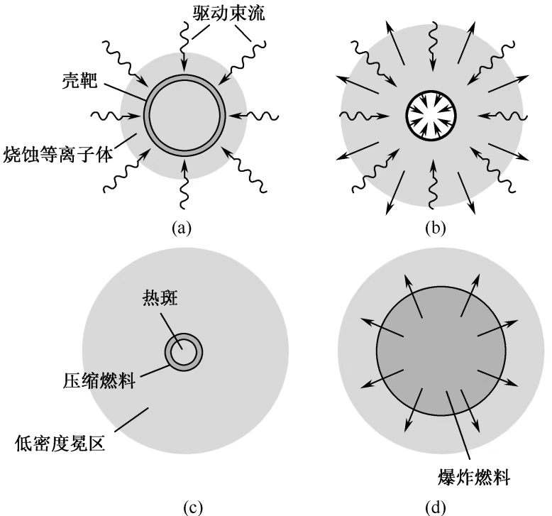

惯性约束聚变（ICF）是将几毫克的燃料压缩到1000倍液体密度，并在由于惯性使燃料保持在一起的这段时间内燃烧它.
它所需的密度可通过外部驱动器的高功率辐照对球壳的内爆来实现.
这种机制叫直接驱动ICF.
内爆不是爆炸，是指靶丸向内压缩的过程.

如图所示简要给出了直接驱动内爆的几个阶段：
辐照导致表面烧蚀[图(a)]，并驱动燃料内爆[图(b)]；
当内爆材料在中心转滞（stagnate）时，其动能被转化为内能；
此时[图(c)]燃料为一个高度压缩的球壳，中心时点燃燃料的热斑，燃烧波从热斑开始并点燃所有燃料，燃料爆炸[图(d)].
靶丸用紫外激光照射.
用大量交叉重叠的激光束来提供均匀照射.
建立在大\(f\)数光学基础上的照射机制，对反应堆室上的小尺度激光束入射孔是有利的.
另一方面，它也有两个缺点：
什么叫大f数光学？什么叫等离子体冕区？